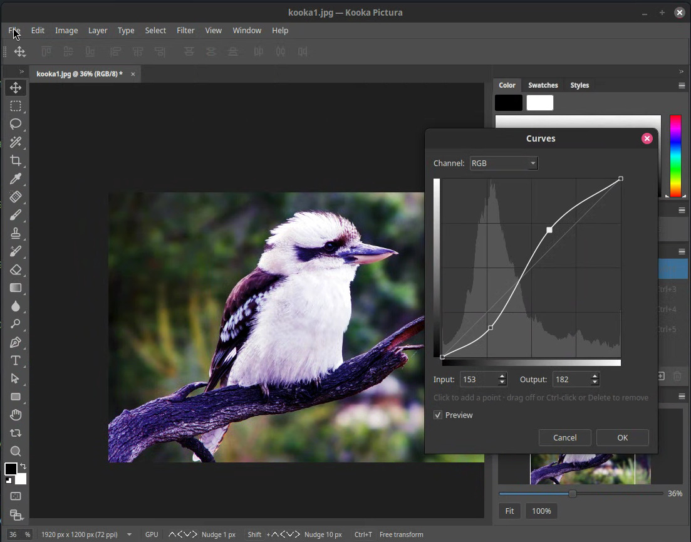
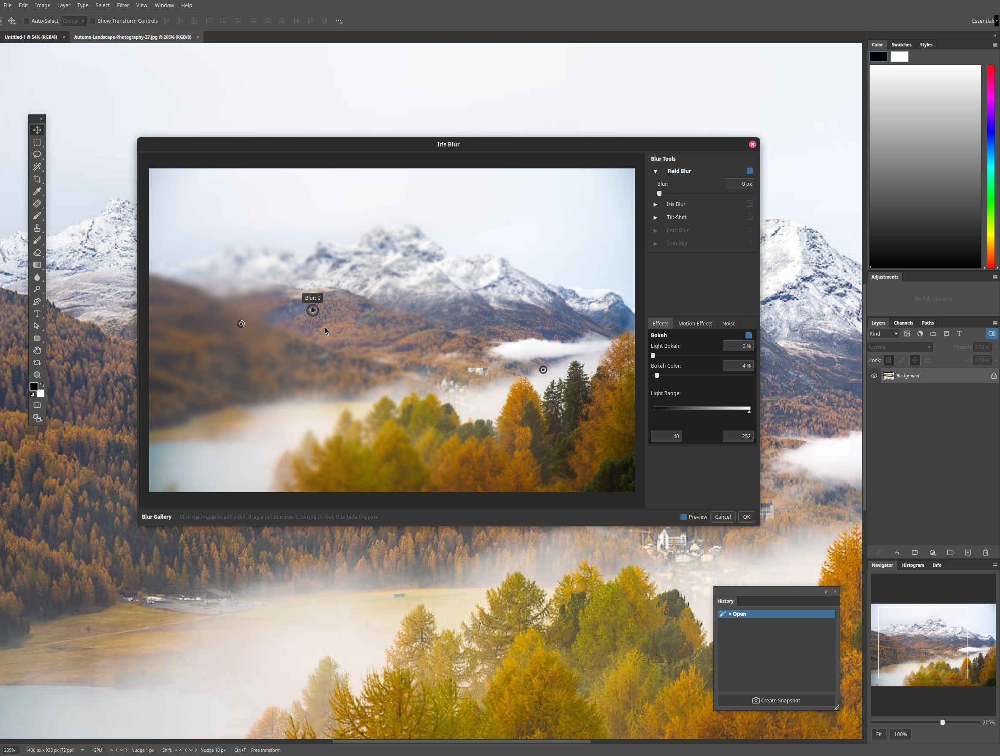
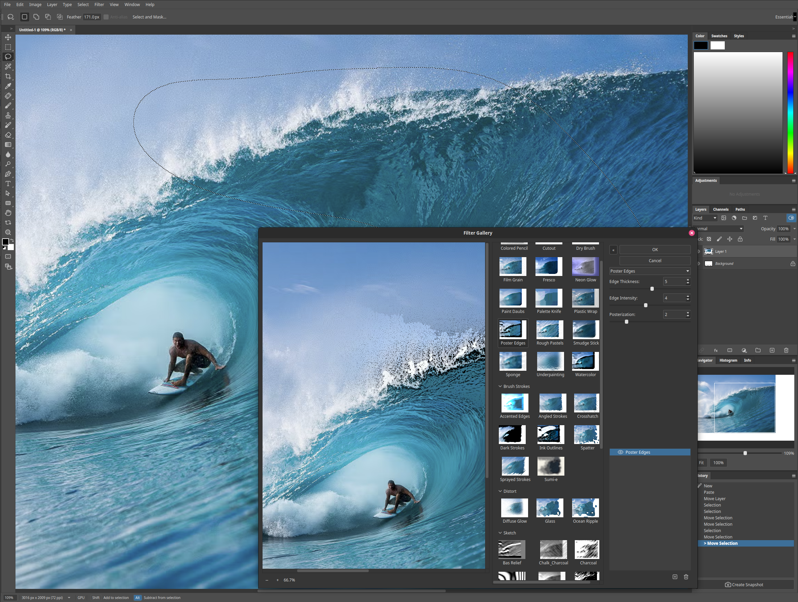
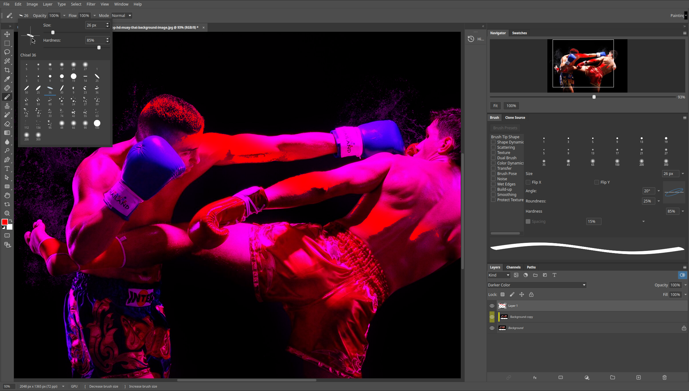

PSD/PSB round-trip
Reads and writes Gray, RGB, CMYK, Lab, Indexed and Bitmap at 8/16/32-bit, with raw, RLE and ZIP compression — preserving blocks the engine does not model.
Kooka Pictura · Free & open source
A layered photo editor for Linux, built to edit photos beautifully — and to read and write Photoshop PSD/PSB files faithfully.
The project
Kooka Pictura is an independent, from-scratch image editor for Linux. The engine is Rust; the interface is Qt 6. It is a working application, not a mock-up — it opens and saves PSD and PSB, composites layers on the CPU with an optional GPU path, and ships a large slice of the classic Photoshop tool, layer, adjustment and filter surface.
The goal is a photo editor that handles the editing workflow really well, not a clone of every corner of Photoshop. For what is in and out of scope, see the roadmap.
Independent by design — no Adobe code, no bundled Adobe assets. Just the formats, and the craft. From the project README
What it does
From the file format up: layers, adjustments, selections, color and metadata — with the Photoshop file itself kept intact through every round-trip.
Reads and writes Gray, RGB, CMYK, Lab, Indexed and Bitmap at 8/16/32-bit, with raw, RLE and ZIP compression — preserving blocks the engine does not model.
Groups and nesting, raster and vector masks, 27 blend modes, layer styles and effects, fill and adjustment layers, locks, labels and filtering.
Embedded smart objects with a bundled, non-destructive editing flow — and smart filters that stay editable.
The built-in raw processor, filling the role of Camera Raw — reached through Filter › Pictura Raw.
All the usual adjustment families plus the full classic filter set — blur, sharpen, noise, stylize, pixelate, distort, render and the artistic families — accelerated on the GPU.
Marquee, ellipse, lasso, magic wand and quick selection, with save/load to channels, selection-masked edits and content move.
ICC profiles, Assign and Convert Profile, and configurable handling of an incoming embedded profile.
EXIF, IPTC and XMP reading and editing, File Info, and metadata templates.
Adjustments panel
Nineteen launcher icons — three fill layers and sixteen adjustments — each creating its layer in one click.
Clicking creates the matching adjustment or fill layer.
Clicking creates the matching adjustment or fill layer.
Clicking creates the matching adjustment or fill layer.
Clicking creates the matching adjustment or fill layer.
Clicking creates the matching adjustment or fill layer.
Clicking creates the matching adjustment or fill layer.
Clicking creates the matching adjustment or fill layer.
Clicking creates the matching adjustment or fill layer.
Clicking creates the matching adjustment or fill layer.
Clicking creates the matching adjustment or fill layer.
Clicking creates the matching adjustment or fill layer.
Clicking creates the matching adjustment or fill layer.
Clicking creates the matching adjustment or fill layer.
Clicking creates the matching adjustment or fill layer.
Clicking creates the matching adjustment or fill layer.
Clicking creates the matching adjustment or fill layer.
Clicking creates the matching adjustment or fill layer.
Clicking creates the matching adjustment or fill layer.
Clicking creates the matching adjustment or fill layer.
In the studio
Open a file, paint, select, crop, stack adjustment and fill layers, apply filters, then save — and the round-trip keeps layers, effects, smart objects, metadata and profiles intact.




Get Pictura
Installers are built and attached to every release. Pick your platform — or compile it from source if you prefer.
x86_64
.deb.rpmx64
.exe.zipApple silicon
.dmgEvery build is attached to the latest release. Prefer to build it yourself? The steps are in DEVELOPING.md.
Kooka Pictura is currently in Beta-testing phase.
Open source
Kooka Pictura is free software under the GNU GPL v3.0 or later, developed in the open on GitHub. Found a bug, have an idea, or want to contribute? The issue tracker is the front door.